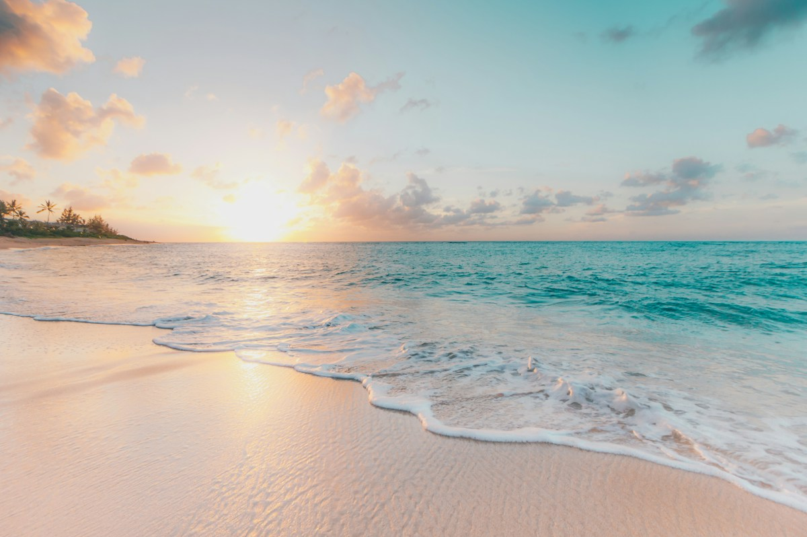

Bãi Tắm Ba Trái Đào · Vịnh Lan Hạ📅 2026-10-27⏱ 5 phút đọc
Khám Phá Bãi Tắm Ba Trái Đào (Vịnh Lan Hạ): Điểm Check-in & Kinh Nghiệm Du Lịch Mới Nhất (2026-10-27)
Bãi cát trắng hình cánh cung ôm trọn làn nước trong vắt nhìn thấu đáy tại ranh giới tự nhiên giữa Vịnh Lan Hạ và Vịnh Hạ Long. Cập nhật lịch trình tham quan, góc chụp ảnh đẹp và kinh nghiệm đặt du thuyền 5 sao & xe Limousine trọn gói.

1. Vẻ đẹp độc bản của Bãi Tắm Ba Trái Đào (Vịnh Lan Hạ)
Bãi cát trắng hình cánh cung ôm trọn làn nước trong vắt nhìn thấu đáy tại ranh giới tự nhiên giữa Vịnh Lan Hạ và Vịnh Hạ Long. Đây là một trong những tọa độ được du khách trong nước và quốc tế yêu thích nhất khi trải nghiệm hải trình nghỉ dưỡng cùng Daiichi Cruise & Daiichi Travel.
2. Thời gian lý tưởng trong ngày để tham quan & chụp ảnh
Khung giờ sáng sớm (07:30 – 09:30) khi nắng ban mai chiếu xuống làn nước ngọc bích và buổi chiều hoàng hôn (15:30 – 18:00) là hai thời điểm đẹp nhất để lưu lại những bức hình tuyệt mỹ cũng như tận hưởng bầu không khí trong lành.
3. Gợi ý đặt dịch vụ Du thuyền & Xe Limousine trọn gói
Để chuyến đi thuận tiện và tiết kiệm chi phí nhất, du khách nên đặt trước gói Combo Xe Limousine Hà Nội / Ninh Bình kết hợp Du thuyền 5★ Daiichi Luxury hoặc Du thuyền ngày VIP 4 trên hệ thống chính thức của Daiichi Travel.
Làm sao để kết hợp tham quan Bãi Tắm Ba Trái Đào (Vịnh Lan Hạ) thuận tiện nhất?
Bạn có thể đặt trực tuyến trên daiichicruise.vn hoặc liên hệ Hotline 1900 9070 / Zalo 0961 004 709 để được tư vấn lịch trình 1 ngày, 2N1Đ hoặc 3N2Đ đón trả tận nơi.
#Bãi Tắm Ba Trái Đào (Vịnh Lan Hạ)#Vịnh Lan Hạ#Vịnh Hạ Long#Ninh Bình#Cát Bà#Daiichi Cruise